Matematiikka tekoälyaikakautena ja matematiikan inhimillinen puoli
Vadim Weinstein · Ressun lukio · 5.11.2026
Vadim Weinstein
Ressu -02
FT 2011 (HY) matematiikasta: logiikka, joukko-oppi, topologia,
MSc 2016 (WY) kognitiotieteestä: enaktivismi, mielen filosofia,
Tutkimusta & luennointia Wienin, Helsingin ja Aalto-yliopistoissa 2012-2019
Matemaattista robotiikkaa Oulun yliopistossa 2020-2026
Yritystoimintaa, konsultointia: nettikasinoiden matematiikkaa sekä matematiikan opettaminen tekoälylle, lukiolaisille ja muille. Manifold Solutions Oy, matikkapelit.fi, TikTok @matikkapelit
perusteiden perässä
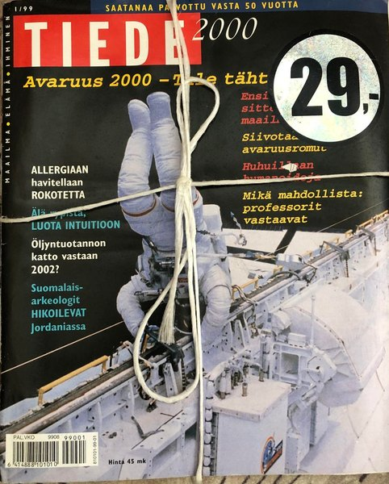
Tiede 2000 -lehtiYläasteen kirjastosta löytyi...
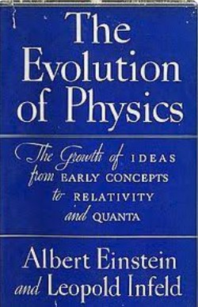
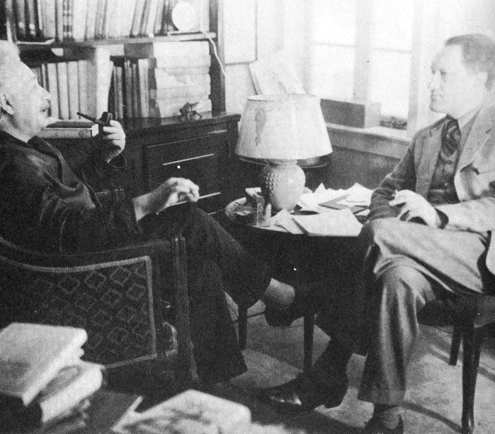
A. Einstein ja L. Infeld: The Evolution of Physics (1938)suom. Fysiikan kehitys Newtonista kvanttiteoriaan, 1962Yleistajuinen kirja fysiikan läpimurroista 1900-luvun alussa
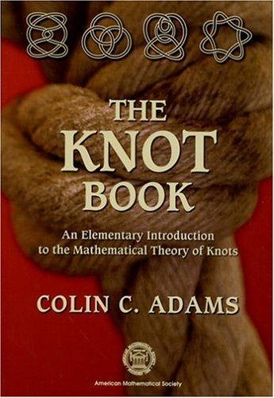
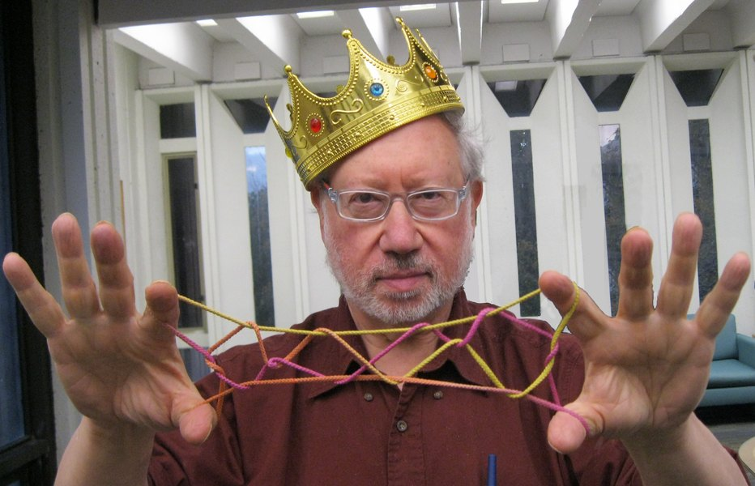
Suuri kiinnostuksenkohteeni: solmuteoria. Kuvassa Colin Adamsin kirja ja Luis Kauffman.
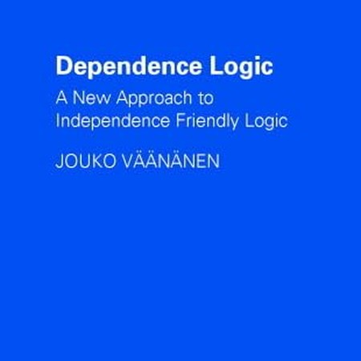
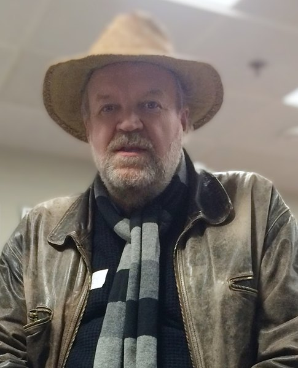
Jouko Väänänen
Helsingin logiikan ryhmän johtava hahmo viimeiset 30 vuotta
Riippuvuuslogiikan kehittäjä
Matematiikan perusteiden ja joukko-opin edelläkävijä Suomessa
Julkaisi yleistajuisen kirjan v. 2026 Matematiikka – epätäydellisyyden valtakunta
Daniel Hutto ja Alva NoëMielenfilosofian konferenssi Granadassa 2024
Kognitivismi ja enaktivismi
Kognitivismi (kognitio on loogista)
Ajattelu on säännönmukaista symbolista loogista päättelyä, joka pohjautuu pään "sisällä" olevaan todellisuuden malliin.
Enaktivismi (kognitio on dynaamista)
Ajattelua, havaitsemista ja toimintaa ei pysty erottamaan toisistaan. Keho, liike ja ympäristö muodostavat dynaamisen systeemin.
Robotiikka
Robotiikan inspiroimia matemaattisia malleja ja teorioita.
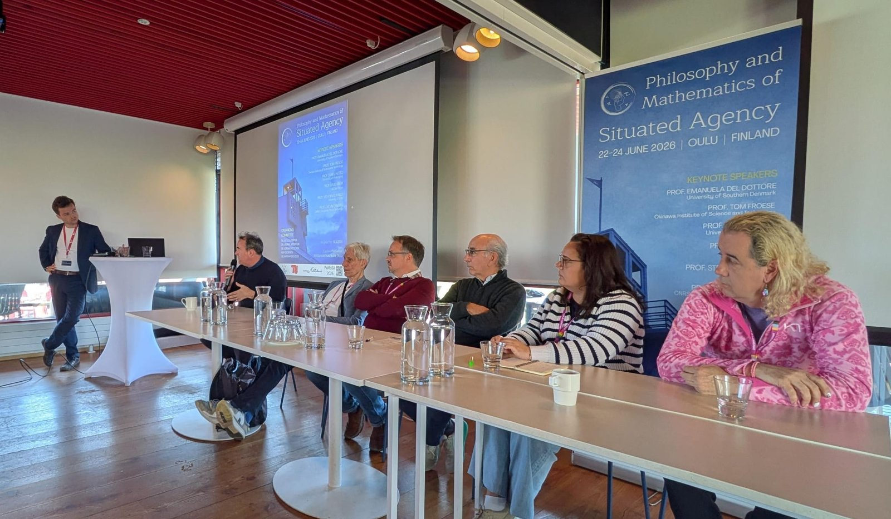
PaMoSA Oulu 2026Philosophy and Mathematics of Situated AgencyJärjestäjät: Kalle Timperi, Vadim Weinstein ja Adrian WieczorekKutsutut puhujat: D. Hutto, K. O'Regan, T. Froese, D. Kirsh, E. Del Dottore, S. M. LaValle
Muutetaan verkkoa niin, että kaikki asteet ovat parillisia.
Nyt kierros onnistuu: jokainen särmä kuljetaan kerran, ja polku palaa alkuun.
Solmujen parillisuus on siis hyödyllinen invariantti. Solmujen asteiden parillisuus on yleensä huomattavasti helpompi määrittää kuin kokeilla kaikki mahdolliset kierrokset.
Eulerin kierros polku
Toinen Eulerin lause: yhtenäisessä verkossa Eulerin polku on olemassa jos ja vain jos paritonasteisia solmuja on 0 tai 2.
"Talon" voi piirtää yhdellä vedolla: Eulerin polku.
Parittomia solmuja on tasan kaksi. Polku alkaa toisesta ja päättyy toiseen.
Nyt verkossa on neljä paritonta solmua ⇒ mahdotonta.
Verkkoteoria ja topologia
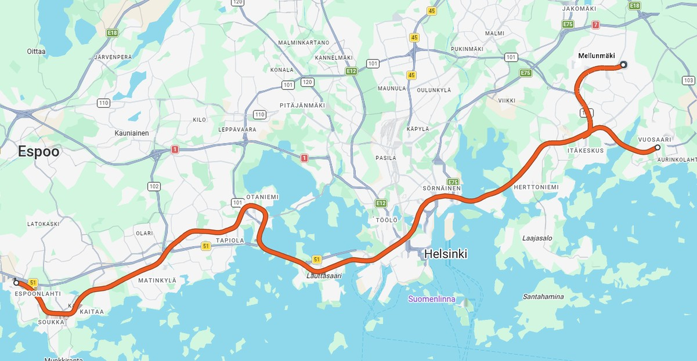
Kartta: etäisyydet ja muodot
Eulerin havainto synnytti verkkoteorian ja loi myös perustan topologialle.
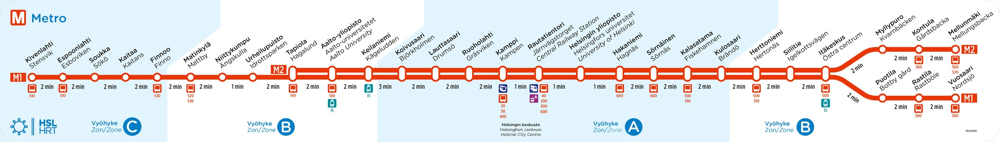
Linjakartta: vain se, mikä on yhteydessä mihinkin
03
Robotit ja topologia
Robotti labyrintissa
Sääntö: pidä oikea käsi seinässä.
Oikealla seinät eivät ole yhtä kappaletta: keskellä on saareke, jota robotti kiertää ikuisesti.
Kiekko, jonka reunassa on aukko: reunaa kiertämällä tulee aina aukolle.
Rengas: saarekkeen reuna on oma ympyränsä. Sitä kiertävä robotti ei koskaan pääse ulkoreunalle.
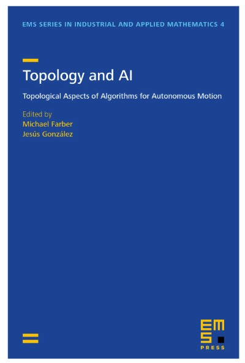
Topology and AI
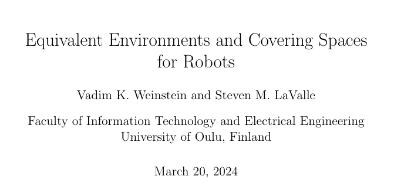
Kysymys: milloin robotti ei voi erottaa kahta ympäristöä toisistaan?
Topologinen analyysi.
Neljä maailmaa, yksi kokemus
Jokaisessa risteyksessä on neljä haaraa: kaksi syaania ja kaksi magentaa.
Robotti tekee saman liikesarjan kaikissa neljässä.
Se ei voi tietää, missä niistä se on. Topologinen teoria tämän takana on ns. peiteavaruuksien teoria.
04
Tulos vai kokemus
Matematiikka työkaluna
LentokoneAerodynamiikka: miten ilma virtaa siiven ympäri
EpidemiatMiten tauti leviää, ja mitä rajoitukset tekevät
PörssiKurssien ja riskien ennakointi
TomografiaKuva kehon sisältä mittauksista. Helsinki on inversio-ongelmien huippua.
Näissä kukaan ei tarvitse nautintoa tai uteliaisuutta. Tarvitaan vastaus.
Volterran kalat
Adrianmeri, ensimmäinen maailmansota: kalastus väheni, ja saaliissa oli yhtäkkiä enemmän petokaloja. Miksi?
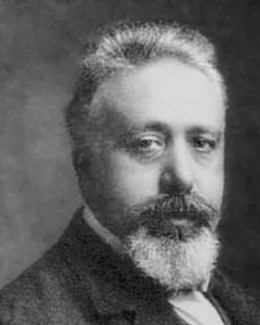
Vito Volterra1860–1940 · selitys 1926
▶ DEMO
Saalis- ja petokalat heilahtelevat. Liukusäädin: kalastus.
Kun kalastusta vähennetään, petokalojen osuus kasvaa.
Ennen tulokseen ei päässyt ymmärtämättä.
TULOS
KOKEMUS
Tekoäly erottaa ne ensimmäistä kertaa.
Nyt näkyy, teenkö jotain kokemuksen vai tuloksen takia.
05
5000 vuotta ulkoistamista
Tieto lähtee päästä
n. 3000 eaa.Maanviljely: jokainen saa erikoistua
suullinenPerinne opetellaan ulkoa
kirjoitusEnsin vähän tekstiä, sen rinnalla suullinen perinne
n. 1450Kirjapaino
1990–Internet, some, digimedia
2020-lukuTekoäly
Yhä vähemmän ulkoa, yhä helpommin saatavilla.
Suullinen perinne
KalevalaRunonlaulajat muistivat tuhansia säkeitä. Lönnrot kirjoitti ne muistiin: Kalevala 1835.
TooraKirjoitetun Tooran rinnalla kulki suullinen perinne. Se kirjoitettiin muistiin vasta noin 200 jaa. (Mišna).
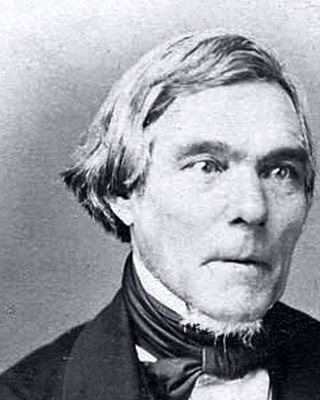
Elias Lönnrot1802–1884
Sokrates kertoo tarinan, jossa kuningas Thamus sanoo kirjoituksen keksijälle:
Tämä keksintö tuottaa unohdusta oppijoiden sieluihin, koska he lakkaavat käyttämästä muistiaan. He luottavat ulkoisiin merkkeihin eivätkä muista itse.
Platon, Faidros 275a, n. 370 eaa. (vapaa käännös)
Sama huoli kuin nyt tekoälystä, 2400 vuotta sitten.
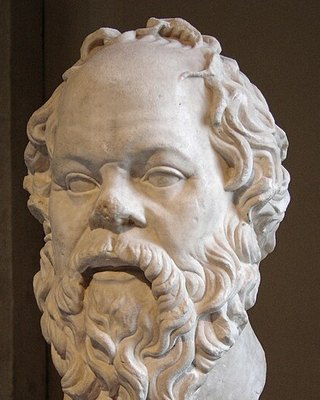
Sokratesn. 470–399 eaa.
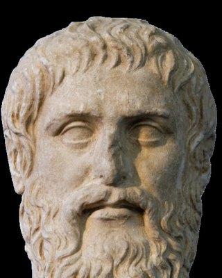
Platonn. 428–348 eaa.
Isoäitini opetteli koulussa runoja ulkoa, monella kielellä.
Montako puhelinnumeroa te osaatte ulkoa?
Kuinka paljon tietoa on päiden ulkopuolella?
▶ DEMO
Eksponenttikäyrä, joka zoomaa ulos
3000 eaa.–1800 → –1900 → –2000 → –2026. Joka kerta käyrä näyttää samalta: "polvi" on aina nyt.
Eksponenttifunktio näyttää samalta kaikilla zoomauksilla: et+c = ec·et. Jokainen sukupolvi luulee elävänsä polvessa.
Tähän asti kaikki saatavilla oleva tieto oli jonkun ihmisen kirjoittamaa.
Nyt ei enää.
Konekin on tuottanut matematiikkaa ennenkin, esim. neliväriteoreema 1976. Uutta on, että nyt kone tuottaa ideoita ja kieltä massoittain.
06
Mikä matematiikassa on inhimillistä
"Haluan ymmärtää tämän."
Kukaan ei voi ymmärtää puolestani niin, että saisin samat kiksit.
Kukaan ei voi katsoa auringonlaskua puolestani. Kukaan ei voi meditoida puolestani.
Konsertti ja konferenssi
MusiikkiÄänitteitä on voinut kuunnella kotona halvalla vuosikymmeniä. Livestriimissä kuva ja ääni ovat usein parempia.
Silti konsertit myydään loppuun. Klassinen, pop, rock.
MatematiikkaPaperit ja videot ovat kaikkien saatavilla.
Silti konferenssit ja seminaarit täyttyvät. Koronan jälkeen kasvokkain tapaaminen oli erityisen haluttua.
Asian ydin välittyy livenä paremmin. Matematiikasta voi puhua samalla aallonpituudella kenen kanssa tahansa, mistä kulttuurista tahansa.
Shakki
1997 Deep Blue voitti Kasparovin. Nyt kone voittaa jokaisen ihmisen, ja sitä kutsutaan "moottoriksi". Shakkia pelataan enemmän kuin koskaan.
Ihminen pelaa ihmistä vastaan, yleisön edessä.
Kukaan ei tarvitse parasta siirtoa. Arvo on pelaamisessa.
Koneen pelit ovat usein tylsiä ja epäintuitiivisia.
Onko matematiikassa samoja piirteitä?
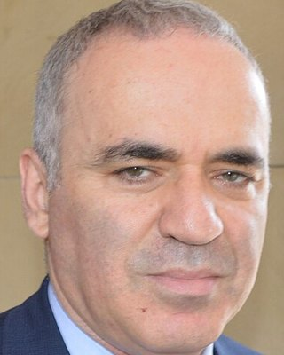
Garri Kasparovs. 1963
Ego ja kilpailu
Päteminen, ego ja kilpailu ovat aina olleet iso osa matemaatikon motivaatiota.
Ne eivät katoa. Ne muuttavat muotoaan.
Tekoäly saavutti 2025 kultamitalin tason matematiikan olympialaisissa. Olympialaiset tarvitsevat huijauksenestoa, kuten shakkiturnaukset.
Kuka maksaa matemaatikolle?
Shakista ei ole koskaan maksettu siksi, että se olisi hyödyllistä. Ammattilaisille maksavat katsojat.
Kiinnostaako valtioita ja yrityksiä enää maksaa matemaatikoille? Millä insentiivillä?
OpetusJoku opettaa ymmärtämään
ValvontaJoku ymmärtää, mitä kone tekee
Yleisö3Blue1Brown, Numberphile
07
Paikallinen sääntö, globaali rakenne
Kokeillaan, miltä matematiikka tuntuu.
Elämäpeli
Ruudukko soluja. Jokainen on elävä tai kuollut, ja kaikki päivittyvät kerralla:
Kuollut solu syntyy, jos sillä on tasan 3 elävää naapuria.
Elävä solu säilyy, jos sillä on 2 tai 3 elävää naapuria.
Muuten solu kuolee.
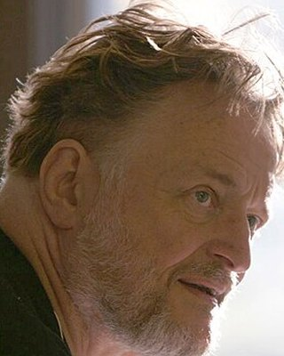
John H. Conway1937–2020 · keksi pelin 1970
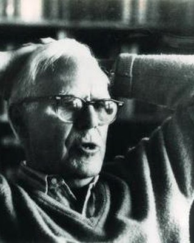
Martin Gardner1914–2010
▶ DEMO
Elämäpeli: vilkkuja, liitäjä, liitäjätykki
Oppilas saa klikata aloituskuvion.
Yllätys: nämä säännöt ovat Turing-täydellisiä. Liitäjistä voi rakentaa logiikkaportteja ja niistä minkä tahansa tietokoneen.
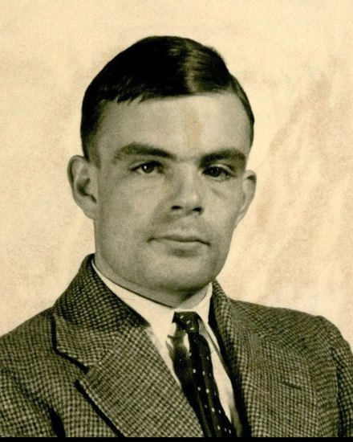
Alan Turing1912–1954
Hopfieldin verkko
Sama ruudukko, mutta nyt säännöt opitaan esimerkeistä.
Elämäpeli on tehty laskemaan loputtomiin.
Hopfieldin verkko on tehty asettumaan muistoon.
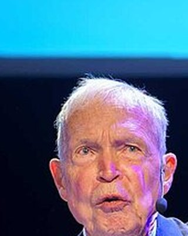
John Hopfields. 1933 · verkko 1982
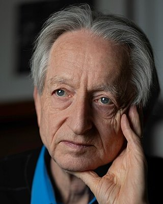
Geoffrey Hintons. 1947
Fysiikan Nobel 2024: Hopfield ja Hinton.
▶ DEMO
Hopfieldin verkko: piirrä, tallenna, sotke, muista
Piirrä 3–4 kuviota ja tallenna ne. Sotke yksi ja paina "Muista": solut kääntyvät yksi kerrallaan, ja vieressä energia laskee portaittain. Liian monta kuviota: valemuistoja.
Kuusikulmiot aivoissa
Rotan aivoissa on soluja, jotka laukeavat, kun rotta on kuusikulmiohilan pisteessä: grid cellit, 2005.
Malli: neuronit, jotka vahvistavat lähellä olevia ja estävät kauempana olevia. Hila syntyy itsestään.
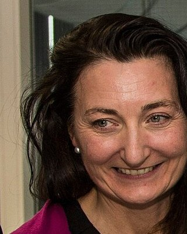
May-Britt Mosers. 1963
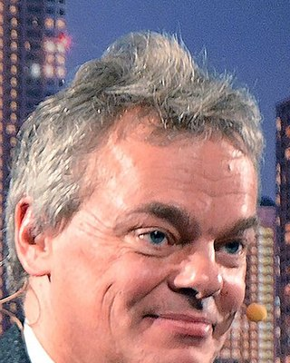
Edvard Mosers. 1962
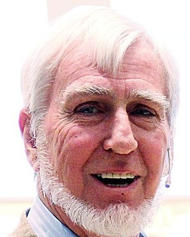
John O'Keefes. 1939
Lääketieteen Nobel 2014.
▶ DEMO
Kuusikulmiohila syntyy silmien edessä
Satunnaisesta kohinasta, kun lähellä vahvistetaan ja kauempana estetään.
Sama mekanismi kuin Turingin morfogeneesissä 1952: miksi seepralla on raidat ja leopardilla täplät.
Alan Turing1912–1954
Mehiläiskenno
Miten taso jaetaan yhtä suuriin osiin niin, että reunoja tarvitaan mahdollisimman vähän?
Varaus: mehiläisten kennon muotoon vaikuttaa myös fysiikka (pehmenevä vaha). Siitä on kiistelty.
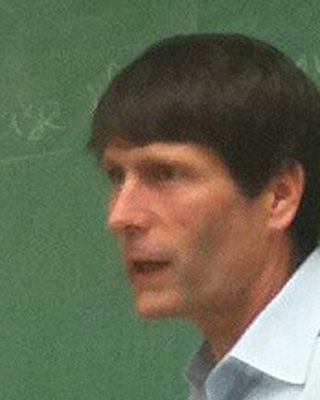
Thomas Haless. 1958
Nykyiset kielimallit ovat Hopfieldin verkkojen kaukaisia jälkeläisiä.
Mitä ne tekevät nyt matematiikalle?
08
Math 2.0
Miten se toimii käytännössä
MALLIehdottaa todistusta
→
LEANtarkistaa sen askel askeleelta: ei aukkoja
→
IHMINENyrittää ymmärtää
Tarkistimessakin voi olla virheitä (Leanin ytimestä löytyi niitä 2026), ja tarkistetuksi voi päätyä hiukan eri lause kuin luultiin.
Lean kertoo, että todistus on oikein. Se ei kerro, miksi.
Terence Tao
UCLA, Fieldsin mitali 2006. Yksi aikamme tunnetuimmista matemaatikoista, ja käyttää itse tekoälyä tutkimuksessaan.
"Why maths has a future even in the era of AI" Nature, 29.10.2026
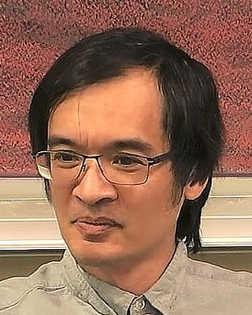
Terence Taos. 1975
"Todistusten niukkuus" on loppunut.
Tekoälyn avulla on julkaistu todistuksia satoihin vanhoihin ongelmiin.
6.10.2026 OpenAI julkaisi kerralla satoja ratkaisuja. Lukemattomat tutkimusohjelmat sekosivat yhdessä yössä.
Ongelmat Taon mukaan
Todistusähky (proof indigestion): tuloksia tulee nopeammin kuin ihmiset ehtivät sulattaa niitä. Ihmisten ymmärrys jää jälkeen.
Epäselvästi kirjoitettuja todistuksia. Seuraavaan ongelmaan heti, kun todistus on juuri ja juuri esitettävissä.
Ongelmien avoin jakaminen on uhattuna: pelätään, että kilpailija ehtii ensin tekoälyn kanssa. Nuoret tutkijat ovat oppineet juuri näitä ongelmia ratkomalla.
Epäselvää, kuinka paljon mallit käyttävät aiempaa työtä ilman viittausta.
Riski ulottuu matematiikan ulkopuolelle: tekoälyn malleja käytetään jo lainapäätöksissä ja rahoitusriskin mittaamisessa.
Taon Maths 2.0
Kannustimet uusiksiPalkitaan prosessia ja oivalluksia, ei vain sitä, joka ratkaisee ensimmäisenä. Suuria kansainvälisiä yhteistöitä.
Uusia tapoja, ei vain nopeampiaMiljoonien tehtävien aineistoja. Kymmeniä todistuksia samalle lauseelle: mitkä ideat ovat olennaisia?
Avoimet mallitAla ei voi nojata yhtiöihin, joilla on kiire louhia ratkaisuja uusien mallien esittelyyn.
Ihminen valvooKäyttöönotto ei saa ohittaa ihmisten kykyä ymmärtää ja valvoa. Ihmisen pitää aina voida ohittaa malli.
Mihin tämä vie
Tuloksen saaminenRäjähtää: nopeaa ja halpaa.
Sulattaminen ja ymmärtäminenYhä hidasta.
Insentiivi ei ole enää "saada tulos", vaan ymmärtämisen ilo, yhteisö, ego ja se, että haluamme olla kuljettajan paikalla.
Paine vie silti kohti sitä, että ohjat ovat tekoälyllä.
Valvominen vaatii ymmärrystä.
Ymmärrys oli ennen keino saada tulos.
Nyt se on keino pitää ohjat.
09
Oma tarina
Miksi logiikka
Halusin ymmärtää asiat itse. Siksi menin perusteisiin, siihen mihin kaikki muu nojaa.
Matematiikka on "ikuista" ja "varmaa". Se antoi vakautta.
Matematiikkaterapiaa?
Vadimin kuva
Nyt teen sitä, mistä olen unelmoinut
Interaktiivisia visualisointeja ja pelejä matematiikan opettamiseen. Harrastuksena.
▶ DEMO
IFS-puu matikkapelit.fi:stä
Tämäkin esitelmä on tehty tekoälyn kanssa.
Kaikki demot löytyvät: matikkapelit.fi
Tekoäly teki työkalun. Ymmärryksen haluan jakaa itse.
Siksi olen täällä enkä lähettänyt videota.
Ensimmäisessä tehtävässä kukaan ei tarvinnut vastausta, mutta jokainen halusi sen itse.
Keskustellaan.
Kuvat
Leonhard Euler: Jakob Emanuel Handmann, Public domain, Wikimedia Commons
Kirjojen kannet: The Evolution of Physics (Simon & Schuster 1938), The Knot Book (AMS 2004), Dependence Logic (Cambridge University Press 2007), Topology and AI (EMS Press)
.jpg){kind=link}
.jpg){kind=link}


_(cropped).jpg){kind=link}
_(cropped)_2.jpg){kind=link}


_2014_(cropped).jpg){kind=link}